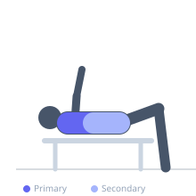
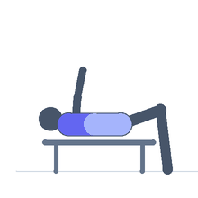

Exercise guide / Lat Stretch
Lat Stretch
The lat stretch lengthens the latissimus dorsi by combining shoulder flexion with lateral trunk flexion, placing the broad back muscle on its full stretch. Because the lats originate from the lumbar spine and iliac crest and insert on the humerus, they are most effectively stretched when the arm is raised overhead and the torso bends away. This stretch directly counteracts the lat tightness that often develops from heavy pulling exercises.
Primary muscles
latissimus dorsi
Secondary muscles
teres major
erector spinae
Equipment
No Equipment (Bodyweight)


Starting position
- Stand or kneel. For the kneeling version, place hands on a bench or high surface and sit back.
Setup
- No equipment required for the standing version. For a supported version, use a doorway, rack upright, or sturdy surface to grip.
Steps
- Step 1: Raise one arm overhead and grip a fixed surface (doorway, rack post) or simply raise the arm.
- Step 2: Allow the torso to bend away from the raised arm, creating a lateral lean.
- Step 3: Breathe into the side of the ribcage on the raised-arm side — this increases the lat stretch.
- Step 4: Hold 30–60 seconds until the stretch is felt running from the outer hip up to the armpit.
- Step 5: Return to neutral and switch sides.
Coaching cues
- Breathe into your armpit — expand that side of the ribcage
- Think of making yourself as tall as possible on the stretched side
- Let the hip slide away from the raised arm
Breathing
- Inhale into the side being stretched — this uses the ribcage expansion to increase tension on the lat.
Range of motion
- Lean until a clear stretch is felt running from the hip along the side of the torso to the armpit.
Tempo
- Hold 30–60 seconds. 2–3 rounds per side.
Common mistakes
- Not leaning laterally enough — many people only raise the arm without getting the lateral trunk component
- Holding the breath rather than breathing into the stretch
- Rotating the torso rather than pure lateral lean
Safety
- Avoid if there is shoulder impingement — the overhead position may aggravate it
- Support the grip with a stable surface to avoid loading the spine under stretch
Training
- mobility: 2–3 reps
- mobility: 1–2 sets
- Rest: {'mobility': 10}